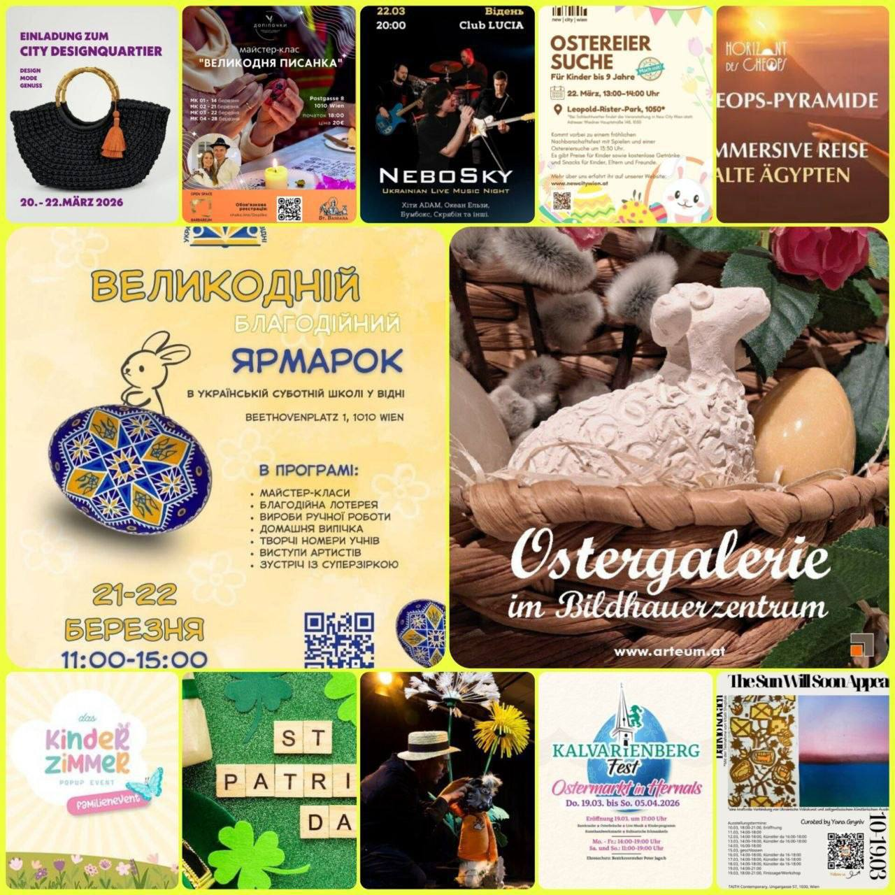

📌 Афіша цікавих заходів у Відні 🇦🇹
Пропонуємо добірку яскравих подій у Відні для дітей і дорослих — виставки, ярмарки та сімейні свята, які подарують гарний настрій і незабутні враження.
🎨 Виставка Данила Ковача “The Sun Will Soon Appear”
📅 По 24 березня
📍 TAITH Contemporary, Ungargasse 57, 1030
💶 Вхід безкоштовний
Графіка, фото, інсталяції, перформанси, зустрічі з митцем
🌸 Kalvarienbergfest 2026
📅 По 5 квітня
⏰ Пн–Пт: 14:00–19:00, Сб–Нд: 11:00–19:00
📍 St.-Bartholomäus-Platz, Hernals, 1170 Wien
🎟 Вхід безкоштовний
Ярмарок ремесел, великодній декор, музика, дитячі активності, театр Kasperl
🌸 Пошук великодніх яєць для дітей
📅 22 березня
⏰ 13:00–14:00
📍 Leopold-Rister-Park, 1050 Wien
👶 Для дітей до 9 років
Ігри, призи, сімейне свято, безкоштовні напої та снеки
🐣 Великодній ярмарок мистецтва — arteum
📅 По 4 квітня
⏰ Ср: 16:00–19:00, Сб: 10:00–15:00
📍 Schultheßgasse 8, 1170 Wien
🎟 Вхід безкоштовний
Скульптури, кераміка, прикраси, майстерні, великодні подарунки
🎈 Das Kinderzimmer PopUp 2026 — весняне свято
📅 22 березня
⏰ 10:00–17:00
📍 Gasometer Wien, Guglgasse 6, Turm B
💶 8–10 €, діти до 12 років — безкоштовно
Локальні бренди, майстер-класи, інтерактивні шоу, ігрові зони
Обирайте події до душі та насолоджуйтесь весняною атмосферою Відня разом із родиною! 🌷
#афіша